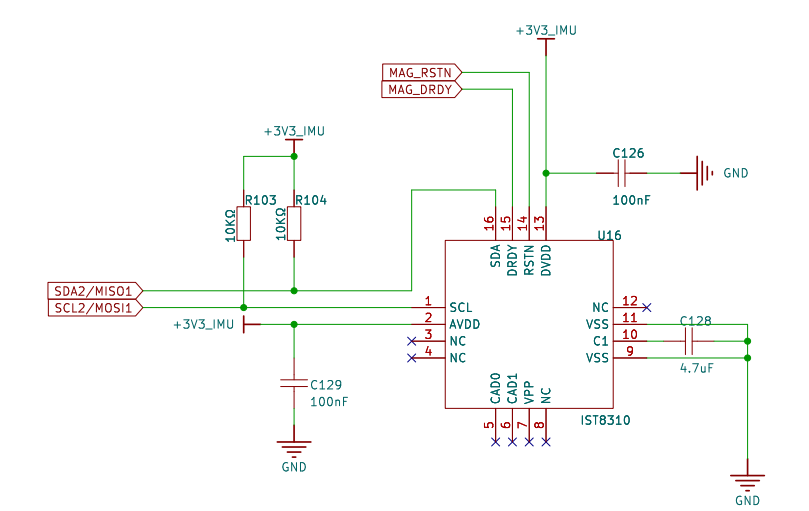
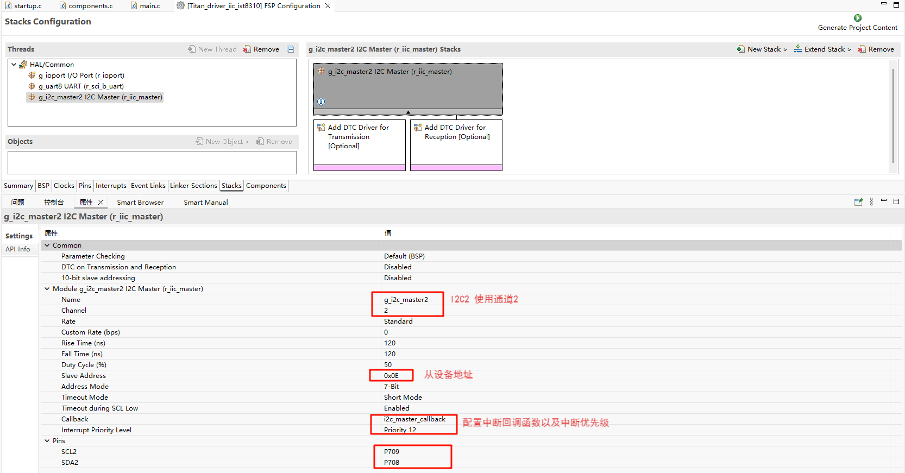
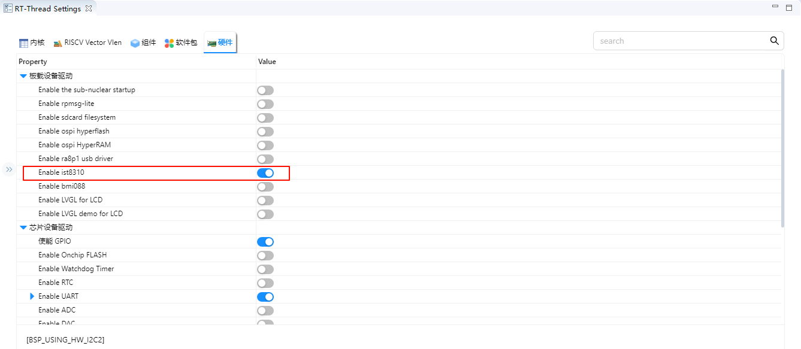
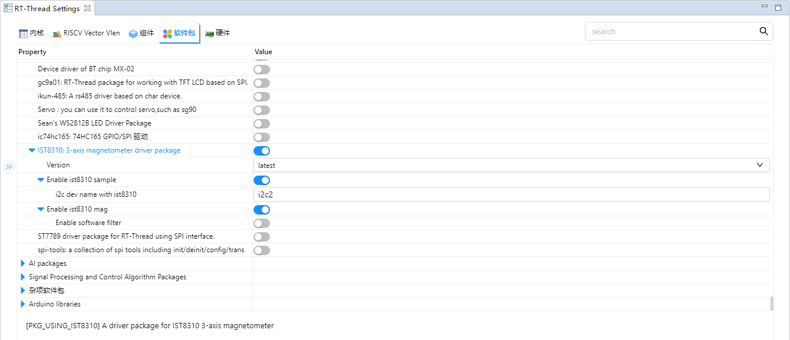
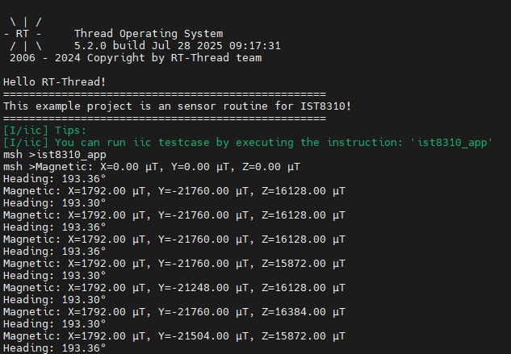

IST8310 示例说明
中文 | English
简介
本示例演示了如何在 Titan Board 上使用 RA8 系列 MCU 的 I2C 接口连接 IST8310 三轴磁力计传感器，并通过 RT-Thread 提供的 I2C 驱动框架进行数据读取。 通过该示例，用户可以熟悉 RA8 I2C Master 外设的配置方法，以及在 RT-Thread 下访问传感器的应用流程。
IST8310 磁力计简介
1. 概述
IST8310 是由 艾迈斯半导体（iSentek） 出品的一款 三轴地磁传感器（Magnetometer），主要用于测量地磁场强度，从而实现 电子罗盘（E-Compass）功能。
它常见于 无人机、智能手机、可穿戴设备、导航系统 中，用于提供航向信息或磁场检测。
2. 主要特性
三轴磁场测量：X、Y、Z 三个方向同时测量
通信接口：I²C（最高 400 kHz）
测量范围：±1600 µT
分辨率：0.3 µT
输出速率：可配置，最高支持 200 Hz
低功耗：工作电流约 85 µA，待机电流 < 1 µA
供电电压：1.8 V ~ 3.6 V（兼容常见 MCU）
封装：3 × 3 × 1 mm LGA 封装，体积小，适合嵌入式应用
3. 工作原理
IST8310 基于 霍尔效应（Hall Effect） 或 磁阻效应（Magneto-Resistive Effect） 实现磁场检测，核心流程如下：
磁场检测
通过传感单元感知地磁场（~50 µT）或其他磁场变化。
信号调理
内部模拟电路将感应信号转换为电压信号，并进行放大、滤波。
A/D 转换
内置 ADC 将模拟信号转为数字值。
数据输出
通过 I²C 总线输出 X、Y、Z 三轴的磁场强度数值，供 MCU 计算航向角或姿态。
4. 性能指标
灵敏度：0.3 µT / LSB
偏移误差：典型值 ±1 µT
零点漂移：温度补偿机制可减小漂移
采样率：0.5 Hz ~ 200 Hz 可配置
工作温度范围：-40 ℃ ~ +85 ℃
5. 优势与限制
优势
体积小，功耗低，适合电池供电系统
输出为数字信号，MCU 接入简单
宽工作电压范围，适配性强
限制
需要外部 校准（硬铁、软铁效应校正）才能保证精度
受温度、环境磁场干扰较大
单独使用时易受噪声影响，常与 IMU（加速度计 + 陀螺仪）融合
RA8 系列 I2C Master 特性
RA8 系列 MCU 内置的 I2C 控制器是一款高性能、多功能的主从兼容模块，可用于与各种 I2C 设备（如传感器、EEPROM、时钟芯片）高速可靠地通信。
1. 总体架构
RA8 I2C 控制器主要由以下模块组成：
主/从控制逻辑 (Master/Slave Control)
支持主模式、从模式和多主模式
自动处理总线仲裁与冲突
支持 7-bit 和 10-bit 地址格式
时钟生成与分频模块 (Clock Generator & Prescaler)
内置可编程分频器，支持标准、快速、高速模式
支持波特率精确设置
FIFO 缓冲区 (Transmit/Receive FIFO)
发送 FIFO 和接收 FIFO 独立
减少 CPU 干预，提高数据吞吐率
支持批量读写，适合高速传感器数据采集
中断控制模块 (Interrupt Controller)
支持多种事件中断，包括：
传输完成
仲裁丢失
总线错误（Bus Error）
FIFO 空/满检测
可选择中断或轮询模式
DMA 支持 (Direct Memory Access)
支持发送/接收数据通过 DMA 传输
减少 CPU 占用，降低功耗
适合高频率、大数据量的 I2C 读写
2. 支持的 I2C 模式
模式 |
速率 |
特性 |
|---|---|---|
Standard Mode |
100 kbps |
兼容传统 I2C 设备 |
Fast Mode |
400 kbps |
高速传感器和 EEPROM 支持 |
Fast Mode Plus |
1 Mbps |
提升总线带宽，减少通信延迟 |
High-Speed Mode |
3.4 Mbps |
适合高速数据采集设备 |
Address Mode |
7-bit / 10-bit |
支持标准与扩展从机地址格式 |
3. 总线管理与多主功能
总线仲裁 (Arbitration)
当多主同时发送时，自动检测冲突
按 I2C 标准规则处理仲裁，防止总线占用冲突
起始/停止条件生成
硬件自动生成 START / STOP 信号
支持重复起始条件（Repeated Start）
ACK/NACK 支持
自动检测从机应答
支持 NACK 检测以判断通信异常
时钟同步 (Clock Stretching)
支持从机延长时钟拉低的功能
确保慢速从机数据传输可靠
4. 时序与数据传输特性
双向数据线 (SDA) 与时钟线 (SCL)
SDA/SCL 通过开漏输出，需要外部上拉电阻（4.7kΩ~10kΩ）
支持 1.8V / 3.3V IO 电平
高速数据传输
支持标准模式/快速模式/高速模式
Fast-Mode Plus 可达 1 Mbps
支持多主/多从、全双向同步通信
FIFO & Burst 支持
支持 8~32 字节 FIFO，可连续发送/接收数据
降低 CPU 中断频率
5. DMA 与中断机制
DMA 支持
TX/RX FIFO 可连接 DMA 控制器
自动触发 DMA 传输，减轻 CPU 负载
适合高频传感器数据采集或连续数据流
中断类型
传输完成中断：TX FIFO 空或 RX FIFO 满
仲裁丢失中断：多主冲突时触发
总线错误中断：起始/停止/ACK/NACK 错误
FIFO 阀值中断：FIFO 高/低水位报警
6. 异常检测与容错机制
仲裁丢失检测：保证多主总线安全
总线错误检测：检测意外停止条件或非法操作
从机未响应处理：可配置重试次数或中断响应
SCL 超时保护：防止总线被长时间拉低
7. 电气与功耗特性
IO 电压：1.8V / 3.3V 可配置
低功耗模式：支持总线空闲模式进入低功耗
SDA/SCL 空闲功耗极低
支持深度睡眠唤醒：I2C 外设可用于唤醒 MCU
RT-Thread I2C 框架简介
RT-Thread I2C（Inter-Integrated Circuit）框架 是 RT-Thread 设备驱动层提供的统一接口，用于管理 MCU 的 I2C 总线设备和从设备通信。该框架将 I2C 总线硬件抽象为标准化设备接口，使应用层能够通过统一 API 实现主设备与从设备之间的数据传输，支持跨平台开发。
1. 设备模型
在 RT-Thread 中，I2C 总线被作为 设备对象（struct rt_device 的子类，类型为 RT_Device_Class_I2C）进行管理。I2C 从设备通过 I2C 设备接口与总线通信，开发者无需直接操作硬件寄存器，只需调用标准接口即可完成数据传输。
2. 操作接口
应用程序通过 RT-Thread 提供的 I/O 设备接口来访问 I2C 总线，主要接口如下所示：
查找 I2C 总线设备
rt_device_t rt_device_find(const char* name);
I2C 数据传输
rt_size_t rt_i2c_transfer(struct rt_i2c_bus_device *bus,
struct rt_i2c_msg msgs[],
rt_uint32_t num);
I2C 消息结构体原型：
struct rt_i2c_msg
{
rt_uint16_t addr; /* 从机地址 */
rt_uint16_t flags; /* 读/写标志 */
rt_uint16_t len; /* 数据字节长度 */
rt_uint8_t *buf; /* 数据缓冲区指针 */
};
为简化操作，RT-Thread 提供了封装函数用于向 I2C 从设备读写数据：
向 I2C 从设备发送数据
rt_size_t rt_i2c_master_send(struct rt_i2c_bus_device *bus,
rt_uint16_t addr,
rt_uint16_t flags,
const rt_uint8_t *buf,
rt_uint32_t count);
从 I2C 从设备读取数据
rt_size_t rt_i2c_master_recv(struct rt_i2c_bus_device *bus,
rt_uint16_t addr,
rt_uint16_t flags,
rt_uint8_t *buf,
rt_uint32_t count);
3. 框架特点
统一接口：所有 I2C 总线硬件通过相同接口暴露给应用层。
跨平台支持：应用程序可在不同 MCU 平台间移植而无需修改 I2C 代码。
灵活的数据传输：支持单条或多条消息传输，可实现重复启动条件。
易用封装函数：提供
rt_i2c_master_send和rt_i2c_master_recv简化读写操作。支持多种传输模式：可实现标准 I2C 的读写操作和复杂数据通信场景。
硬件说明
Titan Board 使用 IIC2 与 IST8310 通信。

FSP 配置
新建 stacks 选择 r_iic_master 并配置 IIC2 配置信息如下：

RT-Thread Settings 配置
在配置中打开 RT-Thread 的 IIC 驱动框架与 IST8310 的驱动软件包；


示例工程说明
基于 IST8310 的驱动软件包实现对磁力计的数据通信。
/*
* Copyright (c) 2006-2025, RT-Thread Development Team
*
* SPDX-License-Identifier: Apache-2.0
*
* Change Logs:
* Date Author Notes
* 2025-06-13 kurisaW first version
*/
#include <rtthread.h>
#include "ist8310.h"
static void ist8310_entry()
{
ist8310_device_t dev = ist8310_init(IST8310_SAMPLE_I2C_DEV_NAME);
if (dev == RT_NULL) {
rt_kprintf("IST8310 init failed\n");
return;
}
/* 设置磁偏角（根据实际位置设置） */
ist8310_set_declination(dev, 0.15f); /* 例如：0.15弧度 */
while (1)
{
ist8310_data_t data;
if (ist8310_read_magnetometer(dev, &data) == RT_EOK)
{
rt_kprintf("Magnetic: X=%.2f µT, Y=%.2f µT, Z=%.2f µT\n", data.x, data.y, data.z);
}
float heading = ist8310_read_heading(dev);
rt_kprintf("Heading: %.2f°\n", heading);
rt_thread_mdelay(1000);
}
}
void ist8310_app()
{
rt_thread_t ist8310 = rt_thread_create("ist8310", ist8310_entry, RT_NULL, 2048, 20, 10);
if(ist8310 != RT_NULL)
{
rt_thread_startup(ist8310);
}
return;
}
MSH_CMD_EXPORT(ist8310_app, IST8310 app);
编译&下载
RT-Thread Studio：在RT-Thread Studio 的包管理器中下载 Titan Board 资源包，然后创建新工程，执行编译。
编译完成后，将开发板的 USB-DBG 接口与 PC 机连接，然后将固件下载至开发板。
运行效果
串口终端输入 ist8310_app 指令：
